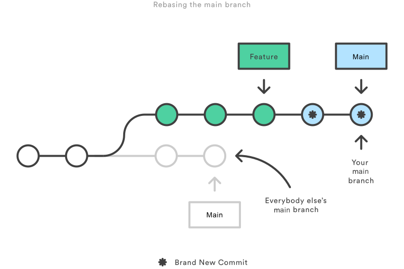

The first thing to understand about git rebase is that it
solves the same problem as git merge. Both of these
commands
are designed to integrate changes from one branch into another branch—they just do it in
very
different ways.
Consider what happens when you start working on a new feature in a dedicated branch, then
another team member updates the main branch with new
commits.
This results in a forked history, which should be familiar to anyone who has used Git as a
collaboration tool.

Now, let’s say that the new commits in main are relevant to
the
feature that you’re working on. To incorporate the new commits into your feature branch, you have two options: merging or rebasing.

RELATED MATERIAL
How to move a full Git repository
Read article
The merge option
The easiest option is to merge the main branch into the feature
branch using something like the following:
git checkout feature
git merge main
Or, you can condense this to a one-liner:
git merge feature main
This creates a new “merge commit” in the feature branch that
ties
together the histories of both branches, giving you a branch structure that looks like this:

Merging is nice because it’s a non-destructive operation. The existing branches are not changed
in
any way. This avoids all of the potential pitfalls of rebasing (discussed below).
On the other hand, this also means that the feature branch will
have an extraneous merge commit every time you need to incorporate upstream changes. If main is very active, this can pollute your feature branch’s
history
quite a bit. While it’s possible to mitigate this issue with advanced git log options, it can make it hard for other developers to
understand the history of the project.
The rebase option
As an alternative to merging, you can rebase the feature branch onto main branch using the
following
commands:
git checkout feature
git rebase main
This moves the entire feature branch to begin on the tip of the main branch, effectively
incorporating all of the new commits in main. But, instead of using a merge commit, rebasing
re-writes the project history by creating brand new commits for each commit in the original
branch.

The major benefit of rebasing is that you get a much cleaner project history. First, it
eliminates
the unnecessary merge commits required by git merge. Second, as you can see in the above
diagram,
rebasing also results in a perfectly linear project history—you can follow the tip of feature
all
the way to the beginning of the project without any forks. This makes it easier to navigate your
project with commands like git log, git bisect, and gitk.
But, there are two trade-offs for this pristine commit history: safety and traceability. If you
don’t follow the Golden Rule of Rebasing, re-writing project history can be potentially
catastrophic
for your collaboration workflow. And, less importantly, rebasing loses the context provided by a
merge commit—you can’t see when upstream changes were incorporated into the feature.
Interactive rebasing
Interactive rebasing gives you the opportunity to alter commits as they are moved to the new
branch.
This is even more powerful than an automated rebase, since it offers complete control over the
branch’s commit history. Typically, this is used to clean up a messy history before merging a
feature branch into main.
To begin an interactive rebasing session, pass the i option to the git rebase command:
git checkout feature
git rebase -i main
This will open a text editor listing all of the commits that are about to be moved:
pick 33d5b7a Message for commit #1
pick 9480b3d Message for commit #2
pick 5c67e61 Message for commit #3
This listing defines exactly what the branch will look like after the rebase is performed. By
changing the pick command and/or re-ordering the entries, you can make the branch’s history look
like whatever you want. For example, if the 2nd commit fixes a small problem in the 1st commit,
you
can condense them into a single commit with the fixup command:
pick 33d5b7a Message for commit #1
fixup 9480b3d Message for commit #2
pick 5c67e61 Message for commit #3
When you save and close the file, Git will perform the rebase according to your instructions,
resulting in project history that looks like the following:

Eliminating insignificant commits like this makes your feature’s history much easier to
understand.
This is something that git merge simply cannot do.
Once you understand what rebasing is, the most important thing to learn is when not to do it. The
golden rule of git rebase is to never use it on public branches.
For example, think about what would happen if you rebased main onto your feature branch:

The rebase moves all of the commits in main onto the tip of feature. The problem is that this
only happened in your repository. All of the other developers are still working with the
original main. Since rebasing results in brand new commits, Git will think that your main
branch’s history has diverged from everybody else’s.
The only way to synchronize the two main branches is to merge them back together, resulting in an
extra merge commit and two sets of commits that contain the same changes (the original ones, and
the ones from your rebased branch). Needless to say, this is a very confusing situation.
So, before you run git rebase, always ask yourself, “Is anyone else looking at this branch?” If
the answer is yes, take your hands off the keyboard and start thinking about a non-destructive
way to make your changes (e.g., the git revert command). Otherwise, you’re safe to re-write
history as much as you like.
Force-pushing
If you try to push the rebased main branch back to a remote repository, Git will prevent you from
doing so because it conflicts with the remote main branch. But, you can force the push to go
through by passing the --force flag, like so:
# Be very careful with this command! git push --force
This overwrites the remote main branch to match the rebased one from your repository and makes
things very confusing for the rest of your team. So, be very careful to use this command only
when you know exactly what you’re doing.
One of the only times you should be force-pushing is when you’ve performed a local cleanup after
you’ve pushed a private feature branch to a remote repository (e.g., for backup purposes). This
is like saying, “Oops, I didn’t really want to push that original version of the feature branch.
Take the current one instead.” Again, it’s important that nobody is working off of the commits
from the original version of the feature branch.
Rebasing can be incorporated into your existing Git workflow as much or as little as your team is
comfortable with. In this section, we’ll take a look at the benefits that rebasing can offer at
the various stages of a feature’s development.
The first step in any workflow that leverages git rebase is to create a dedicated branch for each
feature. This gives you the necessary branch structure to safely utilize rebasing:

Local cleanup
One of the best ways to incorporate rebasing into your workflow is to clean up local, in-progress
features. By periodically performing an interactive rebase, you can make sure each commit in
your feature is focused and meaningful. This lets you write your code without worrying about
breaking it up into isolated commits—you can fix it up after the fact.
When calling git rebase, you have two options for the new base: The feature’s parent branch
(e.g., main), or an earlier commit in your feature. We saw an example of the first option in the
Interactive Rebasing section. The latter option is nice when you only need to fix up the last
few commits. For example, the following command begins an interactive rebase of only the last 3
commits.
git checkout feature git rebase -i HEAD~3
By specifying HEAD~3 as the new base, you’re not actually moving the branch—you’re just
interactively re-writing the 3 commits that follow it. Note that this will not incorporate
upstream changes into the feature branch.

If you want to re-write the entire feature using this method, the git merge-base command can be
useful to find the original base of the feature branch. The following returns the commit ID of
the original base, which you can then pass to git rebase:
git merge-base feature main
This use of interactive rebasing is a great way to introduce git rebase into your workflow, as it
only affects local branches. The only thing other developers will see is your finished product,
which should be a clean, easy-to-follow feature branch history.
But again, this only works for private feature branches. If you’re collaborating with other
developers via the same feature branch, that branch is public, and you’re not allowed to
re-write its history.
There is no git merge alternative for cleaning up local commits with an interactive rebase.
Incorporating upstream changes into a feature
In the Conceptual Overview section, we saw how a feature branch can incorporate upstream changes
from main using either git merge or git rebase. Merging is a safe option that preserves the
entire history of your repository, while rebasing creates a linear history by moving your
feature branch onto the tip of main.
This use of git rebase is similar to a local cleanup (and can be performed simultaneously), but
in the process it incorporates those upstream commits from main.
Keep in mind that it’s perfectly legal to rebase onto a remote branch instead of main. This can
happen when collaborating on the same feature with another developer and you need to incorporate
their changes into your repository.
For example, if you and another developer named John added commits to the feature branch, your
repository might look like the following after fetching the remote feature branch from John’s
repository:

You can resolve this fork the exact same way as you integrate upstream changes from main: either
merge your local feature with john/feature, or rebase your local feature onto the tip of
john/feature.

Note that this rebase doesn’t violate the Golden Rule of Rebasing because only your local feature
commits are being moved—everything before that is untouched. This is like saying, “add my
changes to what John has already done.” In most circumstances, this is more intuitive than
synchronizing with the remote branch via a merge commit.
By default, the git pull command performs a merge, but you can force it to integrate the remote
branch with a rebase by passing it the --rebase option.
Reviewing a feature with a pull request
If you use pull requests as part of your code review process, you need to avoid using git rebase
after creating the pull request. As soon as you make the pull request, other developers will be
looking at your commits, which means that it’s a public branch. Re-writing its history will make
it impossible for Git and your teammates to track any follow-up commits added to the feature.
Any changes from other developers need to be incorporated with git merge instead of git rebase.
For this reason, it’s usually a good idea to clean up your code with an interactive rebase before
submitting your pull request.
Integrating an approved feature
After a feature has been approved by your team, you have the option of rebasing the feature onto
the tip of the main branch before using git merge to integrate the feature into the main code
base.
This is a similar situation to incorporating upstream changes into a feature branch, but since
you’re not allowed to re-write commits in the main branch, you have to eventually use git merge
to integrate the feature. However, by performing a rebase before the merge, you’re assured that
the merge will be fast-forwarded, resulting in a perfectly linear history. This also gives you
the chance to squash any follow-up commits added during a pull request.

If you’re not entirely comfortable with git rebase, you can always perform the rebase in a
temporary branch. That way, if you accidentally mess up your feature’s history, you can check
out the original branch and try again. For example:
git checkout feature
git checkout -b temporary-branch
git rebase -i main
# [Clean up the history]
git checkout main
git merge temporary-branch
And that’s all you really need to know to start rebasing your branches. If you would prefer a
clean, linear history free of unnecessary merge commits, you should reach for git rebase instead
of git merge when integrating changes from another branch.
On the other hand, if you want to preserve the complete history of your project and avoid the
risk of re-writing public commits, you can stick with git merge. Either option is perfectly
valid, but at least now you have the option of leveraging the benefits of git rebase.